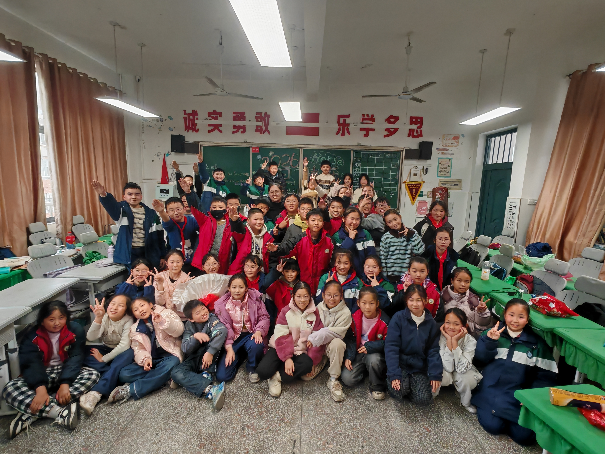

第153篇 日记
2025年12月31日 晴 Wed.
特别篇：元旦晚会
今天是2025年的最后一天，学校在每年的最后一天下午都会让所有班级在班上举行元旦晚会。
席老师已经安排好了主持人。是金芮希、廖杨梓和胡欣妍。
中午吃饭时，席老师安排许梓浩打饭。许梓浩就坐我后面，金芮希就坐许梓浩右边。我问金芮希：“你能不能在晚会结束后把主持稿和节目单给我？我要回去后更新日记。”她说：“行。”许梓浩说：“金芮希说的‘行’会不会是‘死刑’的‘刑’？”（今天段老师就教了我们“刑”字）
下午1点，是熊老师上午休。席老师让金芮希和廖杨梓来画黑板报，主题是“2026元旦快乐”。午休之后，晚会开始。大家把桌子都搬到了教室三旁（讲台上不放，所以是三旁），教室中间的空地就用来表演节目。
来看看主持稿和节目单
A=金芮希
B=廖杨梓
C=胡欣妍
开场白
A：祥蛇辞旧启新程，瑞马迎春耀华章。
B：岁月流金天锦绣，万象更新起新篇。
C：尊敬的各位老师，
A：亲爱的同学们，
合：大家下午好！
B：回首过去一年，我们在知识的海洋中乘风破浪，是老师如灯塔照亮航程。加减乘除，算不尽老师的奉献；诗词歌赋，颂不完对老师的感恩。
C：没错，课堂上，老师用智慧的光芒，点亮我们前行的路；生活中，老师以温暖的关怀，呵护我们成长。在此，让我们向所有辛勤付出的老师们，道一声：谢谢！
A：站在岁末，我们回望过去，过去的一年有太多的感动与故事。
B：站在岁首，我们展望未来，未来的一年有更多的期望与梦想。
C：今天，华灯璀璨，我们齐聚一堂，用歌声传递喜悦。
A：今天，笑语欢腾，我们载歌载舞，用舞蹈诠释精彩。
B：让我们用最动听的声音，唱出新年的旋律。
C：让我们用最曼妙的舞姿，舞出青春的风采。
合：现在，我宣布元旦晚会正式开始！
A：在此李昊雨同学在中午走前写了一张纸条给全班，写的是：
节目单
| 序号 | 表演者 | 种类 | 节目名称 | 哪个主持人报 |
|---|---|---|---|---|
| 1 | 黄赫歆 | 唱歌 | 《让我们荡起双桨》 | 金芮希 |
| 2 | 唐晨睿 | 唱歌 | 《说唱脸谱》 | 廖杨梓 |
| 3 | 余佳萱 | 唱歌 | 《陪我过个冬》 | 胡欣妍 |
| 4 | 金芮希、廖杨梓 | 舞蹈 | 《古典舞》串烧 | 胡欣妍 |
| 5 | 胡欣妍 | 唱歌 | 《Wakawaka世界杯》 | 廖杨梓 |
| 6 | 张文浩 | 九连环（上） | 胡欣妍 | |
| 7 | 刘艺凡 | 科学 | 《自制灭火器》 | 金芮希 |
| 8 | 陈韵泽 | 科技 | 《我的网站》 | 廖杨梓 |
| 9 | 张文浩 | 九连环（下） | 胡欣妍 | |
| 10 | 陈睿铭、杨锐 | 舞蹈 | 《上车揺》 | 金芮希 |
| 11 | 周宏宇、许梓浩、熊佳煜、陈韵泽、吴雨哲、刘艺凡 | 《二战战史》 | 廖杨梓 | |
| 12 | 曹之一、蔡盛楠、钟雅晨 | 舞蹈 | 《Like jennie》 | 胡欣妍 |
| 13 | 黄赫歆、文雨涵 | 相声 | 《反正话》 | 金芮希 |
| 14 | 周宏宇 | 吉他 | 《阿纲觉醒》 | 胡欣妍 |
| 15 | 胡欣妍 | 舞蹈 | 《光亮》 | 金芮希 |
| 16 | 周雨馨 | 魔方 | 廖杨梓 | |
| 17 | 李钧宸 | 魔术 | 胡欣妍 | |
| 18 | 熊佳煜 | 魔术 | 金芮希 | |
| 19 | 吴芊锦、蔡佳亭 | 古筝（吴）、唱歌（蔡） | 《青花瓷》 | 廖杨梓 |
结束语
A：欢乐的时光总是短暂，团聚的日子特别让人感动。
B：虽然我们无法阻拦时间的流逝，但我们可以主宰自己的心情。
C：新的一年，新的希望，新的征程，承载新的梦想。
A：在这充满希望的新年，我们以奋斗为笔，书写青春华章。
B：我们要像展翅的雄鹰，在知识的苍穹中翱翔。
C：我们要如破浪的船只，在成长的海洋里前行。
A：让我们携手共进，用拼搏和汗水，铸就我们的辉煌。
B：让我们满怀豪情，以坚定的步伐，迈向充满希望的明天。
合：老师们，同学们，本次元旦晚会到此结束，祝大家新年快乐，学业有成！
开场白

第一个表演
（我觉得黄赫歆的声音有一点小）
第二个表演
（唐晨睿唱得不错，声音也有点小）
第三个表演
（余佳萱声音也有点小）
第四个表演
金芮希和廖杨梓是好朋友，所以她们一起表演了这个节目。
（古典舞跳得不错）
第五个表演
胡欣妍唱得很好，她很擅长sing English songs。
第六个表演
张文浩把九连环拆开了，不过接下来第9个表演他要把九连环还原。
第七个表演
刘艺凡的自制灭火器效果不错，看完这个表演我们懂了一些化学知识：小苏打和醋反应会产生二氧化碳气体。
第八个表演
（老师没拍视频）
这是我表演的节目，我介绍了我的网站（哪还要说，不就是本站吗），还有一些我做过的项目。
第九个表演
张文浩把九连环还原了，真厉害！
第十个表演
陈睿铭和杨锐（那个戴黑框眼镜的是杨锐）跳得很好，很有活力。但是陈睿铭就是亿口秋溺，我当然很讨厌他（看这篇日记了解一下）。
第十一个表演


这是二战战史的表演，我们要扮演各个国家。戴眼镜的是我（我扮演日本），戴黑色口罩的是周宏宇（他扮演纳粹德国），最左边的是许梓浩（他扮演苏联），拿着青天白日旗的是刘艺凡（他扮演中华民国），中间拿白纸的是熊佳煜（他扮演意大利），最右边的是吴雨哲（他扮演美国）。
我们演了这些情节：日本侵华战争、德国进攻苏联、核爆日本、希特勒自杀。
第十二个表演
曹之一、蔡盛楠和钟雅晨跳得很好。最前面的是曹之一，后面的是钟雅晨和蔡盛楠。
第十三个表演
黄赫歆和文雨涵的相声很好笑。首先黄赫歆问文雨涵：“你脑子聪明吗？”，文雨涵回答：“我脑子最聪明啦！”，接下来黄赫歆接连问了好几个问题，文雨涵都这样作了肯定回答。最后黄赫歆问：“你脸皮厚不厚？”文雨涵回答：“我脸皮最厚啦！”然后她才反应过来。
第十四个表演
周宏宇弹吉他弹得很好，他没唱歌，因为他弹的是纯音乐。我听了说：“维兰德崛起了！”（看视频时仔细听可以听到这句话）
第十五个表演
胡欣妍跳得很好，很有活力。只是背景音乐有点吵。
第十六个表演

周雨馨还挺快的，把魔方还原了。
第十七个表演
李钧宸的魔术挺有趣的。
第十八个表演
熊佳煜的魔术挺有趣的。
第十九个表演
吴芊锦古筝弹得很好，蔡佳亭唱得也很好。
最后
最后席老师给我们拍了合照，本来熊老师在旁边，席老师对熊老师说：“熊沙（这是熊老师的本名）也到后面去和同学们一起拍合照吧。”于是熊老师也到我们这来了。
这里介绍一下同学们：
前面第一排（从左到右）：余佳萱、黄赫歆、文雨涵、周嘉骐、尹佳伊、沈书灿、蔡佳莉、蔡佳亭、李子涵、周雨馨、周满欣
第二排：金芮希、廖杨梓、胡欣妍、黄晨晨、唐晨睿、吴语晨、方雨航、夏晨萱、张欢
第三排：许梓浩、我、周宏宇、吴雨哲、李钧宸、冯筱莜、曹之一、吴芊锦
第四排：周家石（被周宏宇挡住了一点）、廖淳一、熊佳煜、刘子乐、王宸希（刘子乐前面）、刘艺凡、陈睿铭、杨锐、王思彤
最后一排，贴着黑板（熊老师站在第四排和这一排之间）：彭允熙、余乐熙、徐浩宸、郭梓宸、张文浩、潘铭浩、蔡盛楠、钟雅晨
对了，殷嘉卉和余芯站在蔡盛楠和钟雅晨的前面。